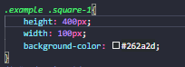
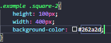

Esta seção irá apresentar como utilizar medidas de altura e largura,
como mostrado nas figuras a seguir:
É utilizada a seguinte tag para inserir a altura de 400px:

É utilizada a seguinte tag para inserir a largura de 400px:
